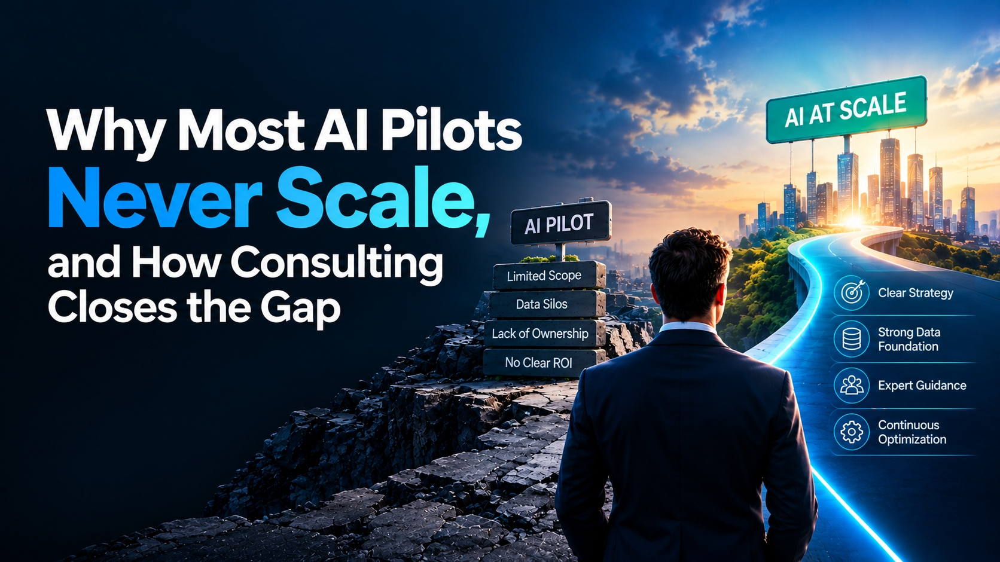

Unclear business problem
The project starts from a technology trend, so effort goes to low-value use cases.

The demo worked. The early results looked great. Then the project stalled. Here is how business leaders turn AI experiments into reliable, measurable results with Strategic AI Innovation Services.
A successful pilot proves a technology can work. It does not prove the business is ready for it. Pilots lean on small datasets, enthusiastic users, and manual help that disappear at scale.
The project starts from a technology trend, so effort goes to low-value use cases.
Results are judged by demos, not data, so value can't be proven.
Outdated, duplicated, or scattered information leads to unreliable outputs.
Employees copy results between tools, so time savings and adoption stay low.
Innovation teams build while business teams assume someone else will adopt.
Only the pilot budget is counted, so production brings surprise expenses.
Security and compliance reviews at the end cause delays and costly redesign.
The goal is not more experiments. It is knowing which ones deserve investment, and giving them a credible path forward through Strategic AI Innovation Services.
Each stage ends with a decision: continue, revise, postpone, or stop. Stopping early can be a smart investment decision.
Define the problem and AI opportunity.
Evidence: problem statement and business ownerTest key assumptions in a limited experiment.
Evidence: results versus a baselineAssess value, risk, cost, and feasibility.
Evidence: credible business caseAddress data, integration, security, and workflow.
Evidence: production requirementsIntroduce the solution into real operations.
Evidence: reliable performance and acceptanceMonitor outcomes and refine.
Evidence: sustained benefits and accountabilityBefore scaling, you should be able to answer "yes" to each item.
Never rely on a single number.
Tip: separate estimated time savings from realized financial benefits. Saved time only becomes a return when it is used productively.
Common reasons include unclear business ownership, unreliable data, underestimated costs, difficult integrations, insufficient governance, and weak employee adoption.
No. A successful experiment may still lack a credible business case or require too much investment to operate reliably.
Task completion time, error rates, operating costs, output quality, customer satisfaction, employee adoption, and the amount of human correction required, all compared with a baseline.
When internal teams need help prioritizing use cases, designing experiments, building a business case, planning integrations, or establishing governance and a roadmap.
Get expert guidance on prioritizing, validating, and scaling AI initiatives.
For More Information